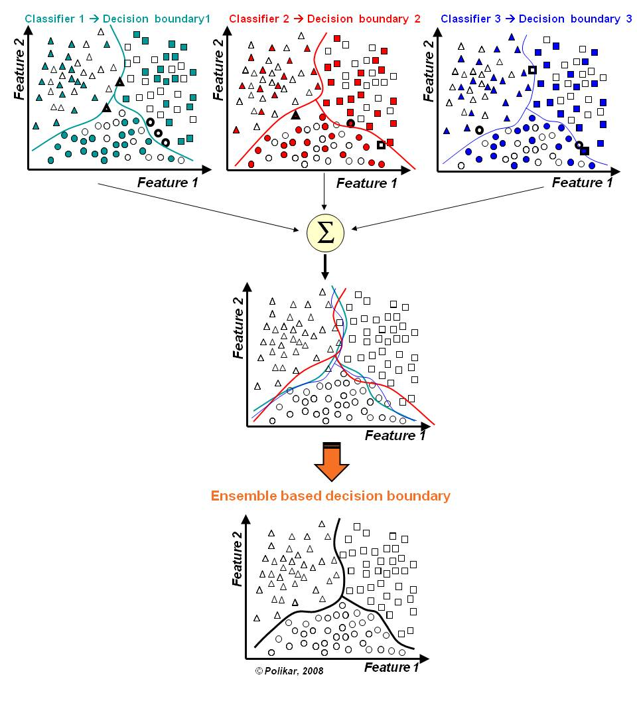
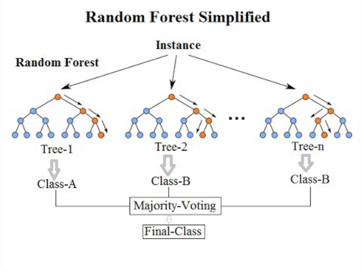

House price prediction [Kaggle]
Abstract
Ask a home buyer to describe their dream house, and they probably won't begin with the height of the basement or the proximity to an east-west railroad. But this competition's dataset proves that much more influences price negotiations than the number of bedrooms or a white-picket fence. With 79 explanatory variables describing (almost) every aspect of residential homes in Ames, Iowa, this competition challenges us to predict the final price of each home. The predicted value “SalePrice” will be given by data cleaning, feature engineering, model building and tuning skills we used. This is a typical regression problem. The root mean square error (RMSE) is selected as the evaluation indicator. In order to make the price level have an equal impact on the evaluation of the result, the root mean square error is calculated based on the logarithm (log) of the predicted value and the actual value.
$$\begin{equation}\sqrt{\frac{\sum^N_{i=1}(y_i - \hat{y}_i)^2}{N}}\end{equation}$$
Resources
https://www.kaggle.com/c/house-prices-advanced-regression-techniques
Mathematical Modeling
Random Forest and XG-Boost are used in this case.
Random Forest
The idea of ensemble is to solve the inherent shortcomings of a single model or a certain set of parameter models, in order to integrate more models, learn from each other's strengths, and avoid limitations. Random forest is the product of the idea of ensemble learning, which integrates many decision trees into a forest, and merges them to predict the final result.
 
An example of an algorithm that is easier to understand:
Imagine a person who wants to know where he should go during his one-year holiday trip. He will consult friends who know him for advice. At first, he went to find a friend who would ask him where he had been and whether he liked them or not. Based on these answers, he can give him some suggestions. This is a typical decision tree algorithm. Through his answers, the friend worked out some rules to guide the places that should be recommended. Later, he began to seek advice from more and more friends, who would ask him different questions and give some suggestions from them. Finally, he chose the most recommended place, which is the typical random forest algorithm.
Advantages:
- For most of the data, its classification is better than the others.
- It can handle high-dimensional features and will not easy overfitting. The model training speed is relatively fast, especially for large data.
- It can assess the importance of the variable when determine the category.
- Strong ability to adapt to data: it can handle both discrete data and continuous data, and the data does not need to be generalized.
Disadvantages:
- The classification of a small number of data sets and low-dimensional data sets may not achieve good results.
- The calculation speed is slower than a single decision tree.
- Random forest does not do well when inferring independent variables or dependent variables that are out of range.
XG-Boost
Boosting
Unlike Bagging that uses multiple “strong learners”, boosting emphasize using multiple “weak learners”. When the models are "a bit strong", they will start fighting each other. If D1, D2, D3 are too complex (too strong), they will interfere with each other and affect the final prediction/classification results. Only when each other is a "weak learner", can we focus on our own prediction/classification, and then combine each other's results together. This is the concept of Boosting (of course, in terms of computational efficiency, it is faster to do so).
When boosting, first build a simple model D1. At this time, there will be data with incorrect predictions. Increase the weight of these data and build D2 model. After first adjust there will still be data with incorrect predictions, and then increase the weight of the data. Build D3 model...

In general, boosting technique helps reduce bias. Since the use of "weak learner" is used, these weak learners are high bias and low variance. Each iteration will be optimized based on the previous model (using the gradient descent method, it is determined that this model is built on where the loss function can drop the most). Since it is to reduce the loss function, it means that the process will get closer and closer to the actual value. In other words, it means to gradually reduce the bias.
Extreme Gradient Boosting Machine (XG-Boost)
The so-called Gradient Boosting Machine (GBM) is a concept that combines the gradient descent method with the Boosting package. Machine refers to an unspecified model, if the gradient descent method can be used to find the direction of the model. GBM kit is basically Tree-based, that is, hundreds of weak decision trees (CART) are combined with gradient descent and boosting.
Here, we use xgb.cv() function and cross validation to find the optimal number of decision trees n-rounds. In the process, set early_stopping_rounds = 30 (if overfitting has occurred when n-rounds < 30, it means that we don’t need to continue tuning and can stop early), the program will automatically determine whether the model has the average performance based on the average performance of Train and Validation Overfitting, and finally finding better n-rounds, will be the least overfitting model.
It should be noted that this least overfitting model is based on the initial basic parameter settings, so it is not necessarily the best. XG-Boost is an improved version of the Gradient Boosting Decision Tree (GBDT). It uses multiple weak classifiers to construct a strong classifier and uses the negative gradient of the previous m-1 iteration results as the new response variable for the next time iteratively, a new weak classifier (tree) is generated and added to the previous estimation function as a new estimation function.
XG-Boost model:
$$\begin{equation}\hat{y}_i = \hat{f}^M(x_i)=\sum^M_{m=1}h_m(x_i)=\hat{f}^{M-1}(x_i)+h_M(x_i)\end{equation}$$
M is the number of iterations, and h_m is the newly added weak classifier for each iteration.
By minimizing the objective function
$$\begin{equation}Obj=\sum_{i}L(y_i, \hat{f}^M(x_i)) + \sum_{m}\Omega(h_m )\end{equation}$$
To find the estimation function, and Ω(h_m ) is the constraint function.
We use Logistic loss function:
$$\begin{equation}L(y_i, f(x)) = y\ln(1+\exp^{-f(x)}) + (1-y)\ln(1+\exp^{f(x)}))\end{equation}$$
As a result of the m-th iteration, the objective function can be written as:
$$\begin{equation}Obj^{(m)}=\sum_{i}L(y_i, \hat{f}^{m-1}(x_i)+h_m(x_i)) + \Omega(h_m) + constant\end{equation}$$
Quadratic approximation using Taylor expansion:
$$\begin{equation}Obj^{(m)}=\sum_{i}[L(y_i, \hat{f}^{m-1}(x_i))+g_i h_m(x_i) + \frac{1}{2}s_ih^2_m(x_i)] + \Omega(h_m) + constant\end{equation}$$
where $$g_i=\partial_{\hat{f}(m-1)}L(y_i,\hat{f}^{m-1}(x_i)) \ \text{ and } \ s_i = \partial^2_{\hat{f}(m-1)}L(y_i, \hat{f}^{m-1}(x_i)).$$
Because the results of the first m-1 times have been determined,
$$L(y_i,\hat{f}^{m-1}(x_i))$$
is a known constant and incorporated into the constant term, the objective function can be rewritten as:
$$\begin{equation}Obj^{(m)}=\sum_{i}[g_i h_m(x_i) + \frac{1}{2}s_ih^2_m(x_i)] + \Omega(h_m) + constant\end{equation}$$
Assuming the output of sample x falls on the j-th leaf, the output value of sample x is w_j corresponding to the weight of each leaf node. Given a tree, nodes are used for classification. Input a sample, and the output value h_m of the leaves is the predicted decision tree, and the predicted result is determined by the nodes of the decision tree. For classification problems, the leaves of the decision tree refer to categories, and for regression problems, the values of the leaves are values.
$$h_m(x_i)=\sum^{T_m}_{j=1}w_jI(x_i\in R_{jm})$$
where $$T_m$$ is number of nodes.
Regulation:
The regularization of decision trees generally considers the number of leaf nodes and leaf weights. It is common to use the weight of the total number of leaf nodes and the sum of the squares of leaf weights as regular items:
$$\Omega(h_m)=\gamma T_m + \frac{1}{2}\lambda\sum^{T_m}_{j=1}w^2_j.$$
Put it back to the objective function:
$$
\begin{equation}\begin{aligned}Obj^{(m)} &\approx\sum_{i}[g_i h_m(x_i) + \frac{1}{2}s_ih^2_m(x_i)] + \Omega(h_m)
\\ &\approx[g_i\sum^{T_m}_{j=1}w_jI(x_i\in R_{jm}) + \frac{1}{2}s_i\sum^{T_m}_{j=1}w^2_jI(x_i\in R_jm)] + \gamma T_m + \frac{1}{2}\lambda\sum^{T_m}_{j=1}w^2_j
\\ &\approx\sum^{T_m}_{j=1}[(\sum_{x_i\in R_{jm}}g_i)w_i + \frac{1}{2}(\sum_{x_i\in R_{jm}}s_i+\lambda)w^2_j] + \gamma T_m
\\ &\approx\sum^{T_m}_{j=1}[(G_j)w_j+\frac{1}{2}(s_j+\lambda)w^2_j]+\gamma T_m
\end{aligned}\end{equation}
$$
Where
$$G_j=\sum_{x_i\in R_{jm}}g_i \ \text{ and } \ s_j=\sum{x_i\in R_{jm}}s_i$$
The structure of the tree is determined. In order to minimize the objective function, the derivative can be set to 0, and the optimal prediction score of each leaf node can be solved as:
$$\begin{equation}\begin{aligned}\frac{\partial obj}{\partial w_j} &= 0 \rightarrow w_j^* = -\frac{G_j}{S_j+\lambda}
\\ obj^{(m)} &= -\frac{1}{2}\sum^{T_m}_{j=1}\frac{G^2_j}{S_j + \lambda} + \gamma T_m
\end{aligned}\end{equation}$$
where
$$\frac{G_j}{S_j+\lambda}$$
measures the contribution of each leaf node to the overall loss.
Therefore, to split a leaf node, the gain is defined as:
$$\begin{equation}gain=\frac{1}{2}[\frac{G^2_L}{S_L+\lambda}+\frac{G^2_R}{S_R+\lambda}+\frac{G^2_L}{S+\lambda}] - \gamma\end{equation}$$
Then multiply the result of this iteration h_m (x_i) by learning rate ν and add it to the result of the previous iteration
$$\begin{equation} \hat{f}^{(m)}(x_i) = \hat{(f)}^{(m-1)}(x_i) + vh_m(x_i). \end{equation}$$